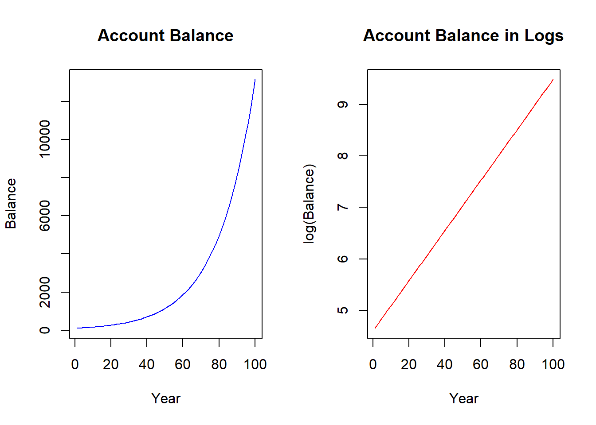
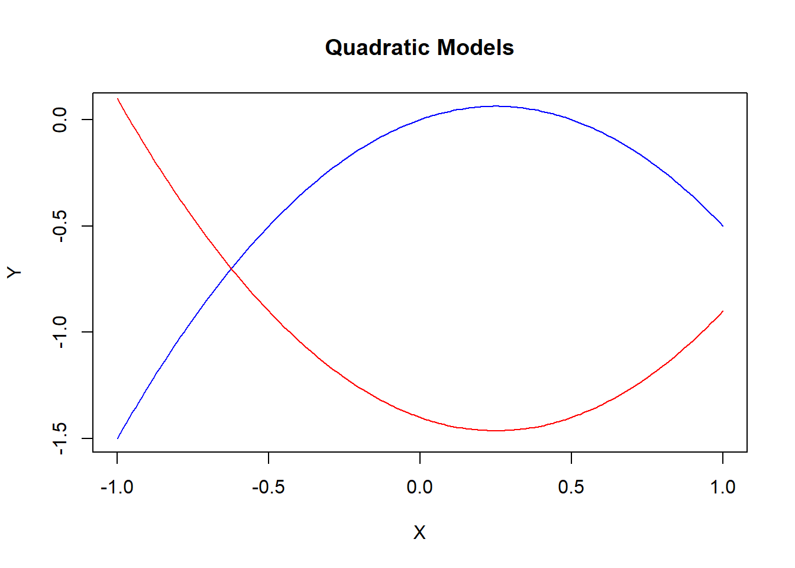
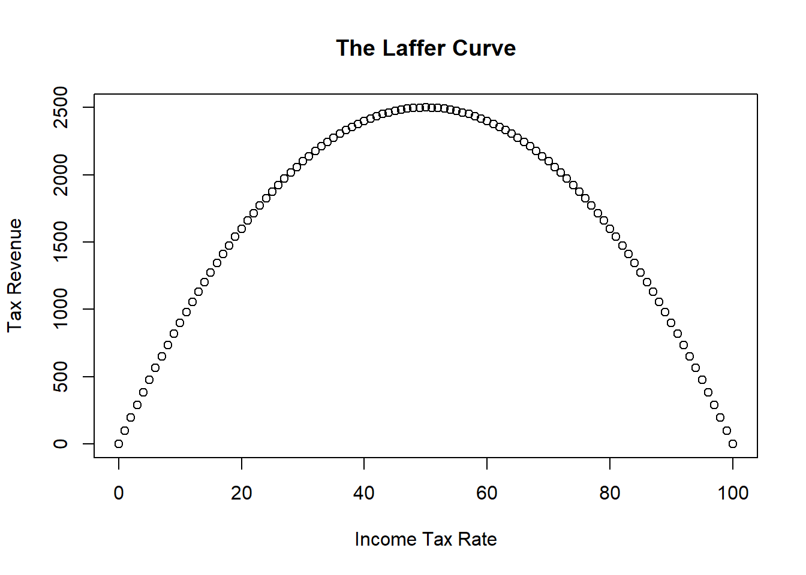
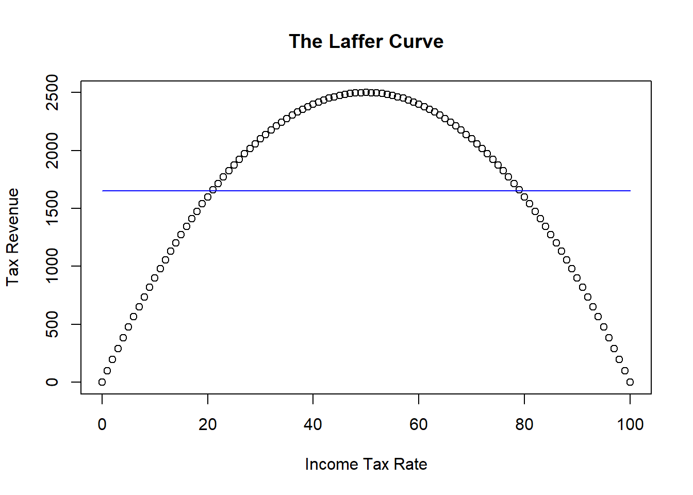
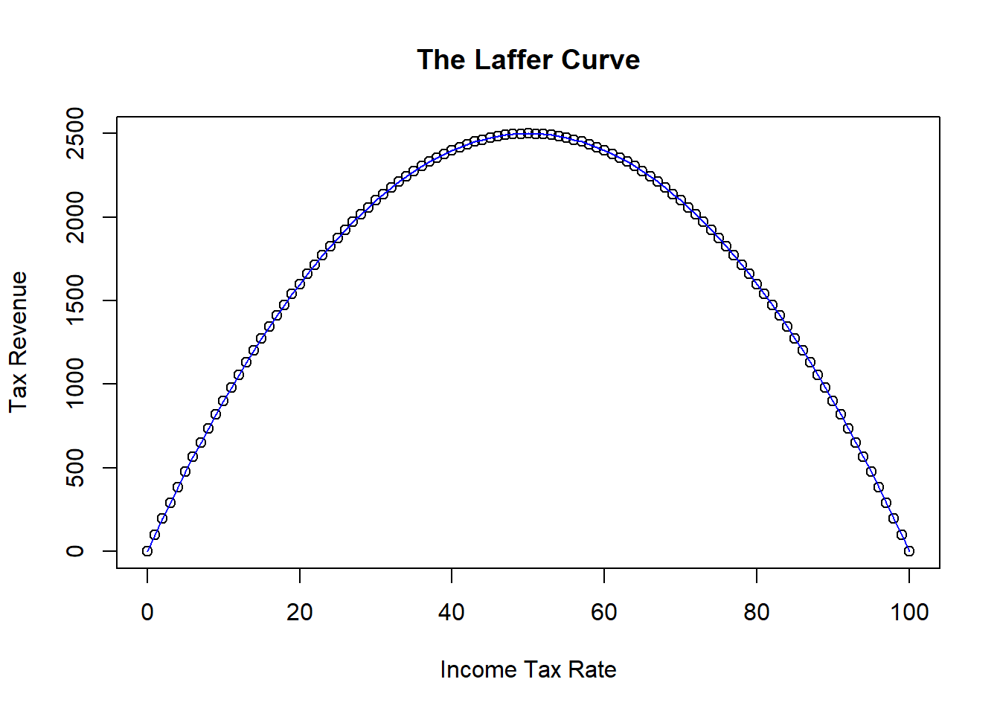
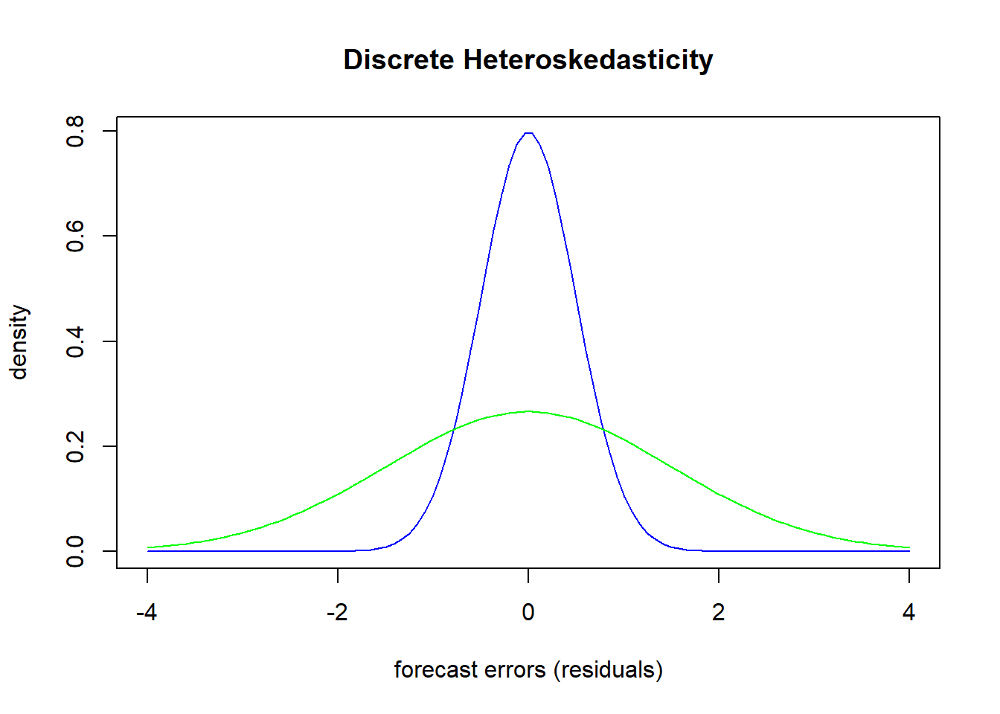
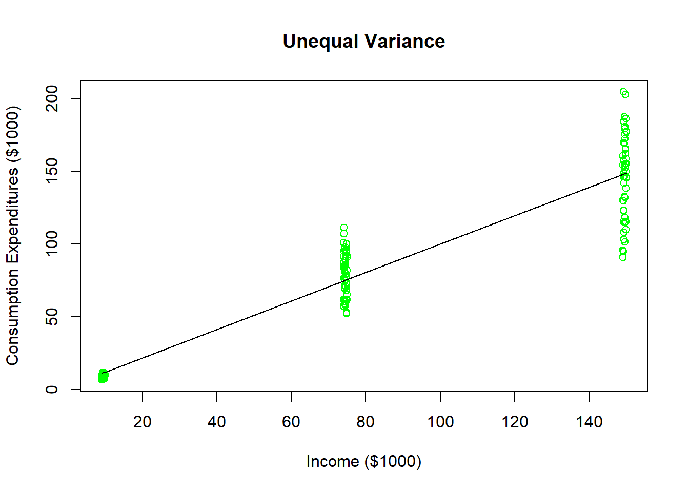
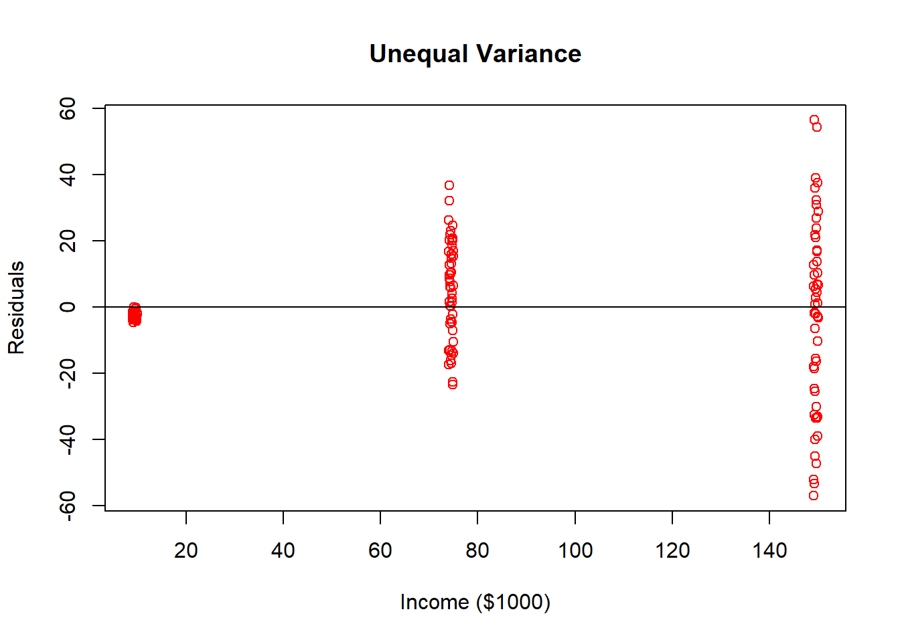

Chapter 9 Advanced Regression Topics
This final chapter of the course companion deals with three advanced topics which will be addressed in turn.
Nonlinear Models
Collinearity
Heteroskedasticity
9.1 Nonlinear Models
\[Y_i = \beta_0 + \beta_1 X_{1i} + \beta_2 X_{2i} + \varepsilon_i\]
The regression model we have studied thus far has two main features. First, the model is linear in the coefficients. This important property allows us to estimate the model using OLS. Second the model is linear in the variables. This property imposes a linear relationship between the dependent and independent variables. In other words, the relationship is a straight line.
A linear relationship between the independent and a dependent variable results in a slope that is constant.
\[\beta_1 = \frac{\Delta Y_i}{\Delta X_{1i}}\]
This means that (holding \(X_{2i}\) constant, of course) the expected value of \(Y\) will increase by \(\beta_1\) units in response to any unit-increase in \(X_{1i}\). The same increase occurs on average no matter where in the range of the independent variable you are. Sometimes this assumption is valid if the range of the independent variable is small enough such that a constant slope is appropriate. Sometimes it isn’t. If this assumption is not valid, then we are committing a specification error even if we have included all of the necessary independent variables. The specification error involves the assumption of a linear model.
The types of models we will consider here will be non-linear in the variables but will still be linear in the coefficients. This means that we can still estimate the models using OLS, but we will be extending the model to uncover some highly non-linear relationships between the dependent and independent variables. We will do this by transforming the variables prior to estimation, and the names of these models are given by the types of transformations we perform. We then run a simple OLS estimation on the transformed variables, and back-out the non-linear relationships afterwards. This last bit is what will be new to us, but you will see that it only involves a brief refresher of… calculus.
9.1.1 Derivatives
In calculus, the slope of a function is a simplistic term for it’s derivative. Take for example the very general function \(f(X) = aX^b\). This function uses two parameters (\(a\) and \(b\)) and one variable (\(X\)) to return a number or function value \(f(X)\). If you think about it, this is exactly what the deterministic component of our regression does. When \(b\neq1\), this function is non-linear. Therefore, to determine the slope - the increase in the function value given a unit-increase in \(X\) - we need to take the derivative. The general formula for a derivative is given by
\[\frac{\Delta f(X)}{\Delta X}=abX^{b-1}\]
Note that we have used this derivative formula before, only we used it when \(f(X)=Y\) and the formula was linear (i.e. \(b=1\)) and \(a = \beta\).
\[Y_i = \beta_0 + \beta_1 X_i + \varepsilon_i\]
\[\frac{\Delta Y_i}{\Delta X_i}=\beta_1\]
9.1.2 Why consider non-linear relationships?
The models we will consider below will generally use this extension (and a few other calculus tools) to transform our variables and get at specific non-linear relationships. The reason we do this is to get at the true relationship between the dependent and independent variables. If the relationship is in fact linear, then none of these sophisticated models are necessary. If the relationship is not linear, then linear models are by definition incorrect and will deliver misleading results. The models in this section are therefore used only when the data requires them. Nobody wants to make a model more complicated than it needs to be.
9.1.3 Functional Forms
The sole purpose of introducing a sophisticated functional form into an otherwise straight-forward regression model is because the relationship between a dependent an independent variable is not linear in the data. Recall that a linear relationship is one where the slope is constant. If the slope is constant (say, \(\beta\)), then a one-unit increase in \(X\) will deliver a \(\beta\) unit increase in \(Y\) on average no matter where in the range of X you are. There are a lot of instances in the real world where this doesn’t make sense. Take for example the impact of apartment rental price on its size. One can imagine that if an apartment is small (e.g. 50 sq ft), then one might be willing to be a lot more for a slight increase in size. If an apartment is ridiculously huge (e.g. 5000 sq ft), then one might not be willing to pay anything for an increase in size. This means that the relationship between apartment rental price and size are conceptually non-linear - the slope is dependent upon the actual size of the apartment. However, if your data has a small range (e.g. between 300 and 400 sq ft), then you might never need to consider a non-linear relationship because a linear one does a good job of approximating the relationship that you observe. This chapter deals with situations where you observe a non-linear relationship in your actual data, so it needs to be modeled.
Once we have established that a relationship is non-linear, we next need to take a stand on what type of non-linear relationship we are attempting to uncover. Answering this question depends upon how you think the slope is going to behave.
Is the slope not constant in unit changes, but constant in percentage changes?
Does the slope qualitatively change? In other words, is there a relationship between a dependent and independent variable that starts out as positive (or negative) and eventually turns negative (or positive)?
Does the slope start out positive or negative and eventually dies out (i.e., goes to zero)?
This chapter details three types of non-linear transformations designed to go after one of these three scenarios. Non-linear transformations are not one size fits all, so having a good idea of how to handle each type of relationship is essential.
9.1.4 The Log transformation
The natural log transformation is used when the relationship between a dependent and independent variable is not constant in units but constant in percentage changes (or growth rates). Imagine putting $100 in a bank at 5 percent interest. If you kept the entire balance in the account, then after one year you will have $105 (a $5 increase), after two years you will have $110.25 (a $5.25 increase), after three years you will have $115.76 (a $5.76 increase), and so on. What is happening is that the account balance is not growing in constant dollar units, but it is growing in constant percentage units. In fact the balance is said to be growing exponentially. Things like a country’s output, aggregate prices, population all grow exponentially because they build on each other just like the compound interest story.
If we kept our $100 dollars in the bank for a very long time, the balance would evolve according to the figure below on the left. The figure illustrates a non-linear relationship between account balance and time - and the slope is getting steeper as time goes on. While we know that the account balance is increasing by larger and larger dollar increments, we also know that it is growing at a constant five percent. We can uncover this constant percentage change by applying the natural log to the balance - as we did to the right figure. You can see that the natural log function straightens the exponential relationship - so the transformed relationship is linear and ready for our regression model.

9.1.4.1 The derivative of the log function
The natural log function has a very specific and meaningful derivative:
\[\frac{dln(Y)}{dY} = \frac{\Delta Y}{Y}\]
This formula is actually a generalization of the percentage change formula. Suppose you wanted to know the difference between \(Y_2\) and \(Y_1\) in percentage terms relative to \(Y_1\). The answer is
\[\frac{Y_2 - Y_1}{Y_1} * 100\%\]
Therefore, the only thing missing from the log transformation is the multiplication of \(\%100\), which we can do after estimation.
For example, suppose that you didn’t know the average percentage change (or average growth rate) of your account. If Y was your account balance and X was number of years in the account, then you could estimate what it was. Notice that the slope is 0.05. If you multiply that by \(100\%\) then you have your 5% interest rate back.
R <- lm(log(Y)~X)
pander(coef(R))| (Intercept) | X |
|---|---|
| 4.61 | 0.05 |
9.1.4.2 Log-log and Semi-log models
Recall that a standard slope is the change in Y over a change in X. Combine this fact with the log of a variable delivers a percentage change in the derivative (provided you multiply by \(100%\)), and you have several options for which variables you want to consider the logs of. The question you ask yourself is if you want to consider the change of a variable in units of the percentage change of a variable.
9.1.4.2.1 Log-log model
A Log-log model is one where both the dependent and the independent variable are logged.
\[ln(Y_i)=\beta_0 + \beta_1 ln(X_i) + \varepsilon_i\]
The slope coefficient \((\beta_1)\) details the percentage change in the dependent variable given a one percent change in the independent variable. To see this, apply the derivative formula above to the entire formula.
\[\frac{dln(Y_i)}{dY} = \beta_1 \frac{dln(X_i)}{dX}\] \[\frac{dln(Y_i)}{dY} * 100\% = \beta_1 \frac{dln(X_i)}{dX} * 100\%\] \[\%\Delta Y_i = \beta_1 \%\Delta X_i\] \[ \beta_1 =\frac{\%\Delta Y_i}{\%\Delta X_i}\]
9.1.4.2.2 Semi-log models
Sometimes it makes no sense to take the log of a variable because the percentage change makes no sense. For example, it wouldn’t make sense to take the log of the year in the bank account example above because time is not relative. In other words, a percentage change in time doesn’t make sense. In addition, variables the reach values of zero or lower cannot be logged because the natural log is only defined on positive values. In either case, it would only make sense to log only one of the variables.
A Log-lin model is a semi-log model where only the dependent variable is logged. This is like the case with the bank account example above.
\[ln(Y_i)=\beta_0 + \beta_1 X_i + \varepsilon_i\]
\[\frac{dln(Y_i)}{dY} = \beta_1 \Delta X\] \[\frac{dln(Y_i)}{dY} * 100\% = (\beta_1 * 100\%)\Delta X\] \[\frac{\% \Delta Y}{\Delta X}= \beta_1 * 100\%\] Note that the 100% we baked into the interpretation is explicitly accounted for in order to turn the derivative of the log function into a percentage change.
A Lin-Log model is a semi-log model where only the independent variable is logged. This might come in handy when you want to determine the average change in the dependent variable in response to a percentage-change in the independent variable.
\[Y_i=\beta_0 + \beta_1 ln(X_i) + \varepsilon_i\]
\[\Delta Y=\beta_1 \frac{dln(X_i)}{X_i}\] \[\Delta Y=\beta_1 \frac{dln(X_i)}{X_i}*\frac{100}{100}\] \[\Delta Y=\frac{\beta_1}{100} \%\Delta X\]
\[\frac{\Delta Y}{\%\Delta X}=\frac{\beta_1}{100} \] Note that the derivation for the lin-log model suggests that you must divide the estimated coefficient by 100 in order to state the expected change in the dependent variable due to a percentage change in the independent variable.
9.1.4.2.3 It isn’t ALL OR NOTHING!!!
To be clear, if you have a multiple regression model with several independent variables, you get to treat the variables however you wish. In other words, if you log one independent variable, you do not need to automatically log the others. This is especially the case when some can while others cannot be logged. The bottom line is that if you have one of the relationships detailed above with the dependent variable and a single independent variable, then you use the correct derivative form and provide the correct interpretation.
In particular, suppose you had the following model
\[ln(Y_i)=\beta_0 + \beta_1 X_{1i} + \beta_2 ln(X_{2i}) + \varepsilon_i\]
This model is a combination between a log-lin model (with respect to \(X_{1i}\)) and a log-log model (with respect to \(X_{2i}\)). The derivatives are therefore \[\beta_1 * 100\% = \frac{\% \Delta Y}{\Delta X_1}\] \[\beta_2= \frac{\% \Delta Y}{\%\Delta X_2}\]
9.1.4.3 Application
If we ran a regression with hourly wage as the dependent variable and tenure (i.e., years on the job) as the independent variable, then we are estimating the average change in dollars for an additional year of tenure. However, it might be more worthwhile to consider an annual average percentage change in wage as opposed to a dollar change. That is what happens to most people, anyway.
data(wage1,package="wooldridge")
REG <- lm(log(wage) ~ tenure, data = wage1)
pander(summary(REG))| Estimate | Std. Error | t value | Pr(>|t|) | |
|---|---|---|---|---|
| (Intercept) | 1.5 | 0.03 | 55.87 | 0 |
| tenure | 0.02 | 0 | 7.88 | 0 |
| Observations | Residual Std. Error | \(R^2\) | Adjusted \(R^2\) |
|---|---|---|---|
| 526 | 0.5 | 0.11 | 0.1 |
The slope estimate gets multiplied by \(100\%\) so we can state that wages increase by \(2\%\) on average for every additional year of tenure.
9.1.5 The Quadratic transformation
A quadratic transformation is used when the relationship between a dependent and independent variable changes direction. The slope can start off positive and become negative (the blue line in the figure), or begin negative and become positive (the red line).

Quadratic models are designed to handle functions featuring slopes that change qualitatively.
\[Y_i = \beta_0 + \beta_1 X_i + \beta_2 X_i^2 + \varepsilon_i\]
Notice that this regression has one variable showing up twice: once linearly and once squared. The regression is still linear in the coefficients, so we can estimate this regression as if the regression contained any two independent variables of interest. In particular, if you defined a new variable \(X_{2i} = X_i^2\), then the model would look like a standard multiple regression. Once the estimated coefficients are obtained, they are combined to calculate one non-linear slope equation.
\[\frac{\Delta Y}{\Delta X} = \beta_1 + 2\beta_2 X\]
A few things to note about this slope equation.
It is a function of X - meaning that you need to choose a value of the independent variable to calculate a numerical slope. This means you are calculating the expected change in X from a unit increase in X from a particular value.
The slope is increasing and or decreasing depending on the values of the coefficients and the independent value of X. The coefficients \(\beta_1\) and \(\beta_2\) are usually of opposite sign. Therefore, the slope is negative if \(\beta_1<0\) and X is small so \(\beta_1 + 2\beta_2 X<0\), or positive is \(\beta_1>0\) and X is small so \(\beta_1 + 2\beta_2 X>0\).
Note: just as in the log transformation, this quadratic transformation does not need to be done to every independent variable in the regression. Only those that are suspected to have a relationship with the dependent variable that changes direction.
9.1.5.1 Application
Consider some simulated data illustrating the relationship between tax rates and the amount of tax revenue collected by the government. One can intuitively imagine that the government will collect zero revenue if they tax income at zero percent. However, they will also collect zero revenue if they tax at 100 percent because nobody will work if their entire income is taxed away. Therefore, there should be a relationship between tax rate and tax revenue that looks something like the figure below.

This figure illustrates the infamous Laffer Curve of supply-side economics. We are using this as an example of a quadratic relationship only - I will spare you my tirade on the detrimental use of this very intuitive idea by supply-siders.
Suppose you had the data illustrated in the figure. If you assumed a linear relationship between tax revenue and rate, then you will get a very misleading result.
REG <- lm(Revenue ~ Rate)
pander(summary(REG))| Estimate | Std. Error | t value | Pr(>|t|) | |
|---|---|---|---|---|
| (Intercept) | 1650 | 151.7 | 10.88 | 0 |
| Rate | 0 | 2.62 | 0 | 1 |
| Observations | Residual Std. Error | \(R^2\) | Adjusted \(R^2\) |
|---|---|---|---|
| 101 | 767.8 | 0 | -0.01 |
plot(X,Y,
main = "The Laffer Curve",
xlab = "Income Tax Rate",
ylab = "Tax Revenue")
lines(X,fitted(REG),col = "blue")
The figure shows that the best fitting straight line is horizontal - meaning that the slope is zero. This linear model would suggest that there is no relationship between tax revenue and tax rate. It is partly true - there is no linear relationship.
REG <- lm(Revenue ~ Rate + I(Rate^2))
pander(summary(REG))| Estimate | Std. Error | t value | Pr(>|t|) | |
|---|---|---|---|---|
| (Intercept) | 0 | 0 | -4.99 | 0 |
| Rate | 100 | 0 | 3.729e+15 | 0 |
| I(Rate^2) | -1 | 0 | -3.853e+15 | 0 |
| Observations | Residual Std. Error | \(R^2\) | Adjusted \(R^2\) |
|---|---|---|---|
| 101 | 0 | 1 | 1 |
plot(X,Y,
main = "The Laffer Curve",
xlab = "Income Tax Rate",
ylab = "Tax Revenue")
lines(X,fitted(REG),col = "blue")
9.1.6 The Reciprocal transformation
Suppose a relationship doesn’t change directions as much as it dies out.
\[Y_i = \beta_0 + \beta_1 \frac{1}{X_i} + \varepsilon_i\]

As in the quadratic transformation, this model is easily estimated by redefining variables (i.e., \(X_{2i}=1/X_i\)). The slope of this function can be obtained using our standard derivative function and noting that \(1/X_i = X_i^{-1}\)
\[Y_i = \beta_0 + \beta_1 \frac{1}{X_i} + \varepsilon_i\] \[Y_i = \beta_0 + \beta_1 X_i^{-1} + \varepsilon_i\] \[\frac{\Delta Y}{\Delta X} = -\beta_1 X_i^{-2}=\frac{-\beta_1} {X_i^{2}}\]
Notice again that a value of the independent variable in needed to calculate the slope of the function at a specific point. However, as X gets larger, the slope approaches zero. A slope of zero is a horizontal line - and that is when the relationship between Y and X dies out. If \(\beta_1>0\) then the slope begins negative and approaches zero from above (the blue line). If \(\beta_1<0\) then the slope begins positive and approaches zero from below (the red line).
9.1.6.1 Application
The richer a nation is, the better a nation’s health services are. However, a nation can eventually get to a point that health outcomes cannot improve no matter how rich it gets. This application considers child mortality rates of developing and developed countries and uses the wealth of a country measured by per-capita gross national product (PGNP) to help explain why the child mortality rate is different across countries.
library(readxl)
CM <- read_excel("C:/Data/ECO3137/CM.xlsx")
REG <- lm(CM$CM ~ I(1/CM$PGNP))
pander(summary(REG))| Estimate | Std. Error | t value | Pr(>|t|) | |
|---|---|---|---|---|
| (Intercept) | 81.79 | 10.83 | 7.55 | 0 |
| I(1/CM$PGNP) | 27273 | 3760 | 7.25 | 0 |
| Observations | Residual Std. Error | \(R^2\) | Adjusted \(R^2\) |
|---|---|---|---|
| 64 | 56.33 | 0.46 | 0.45 |
plot(CM$PGNP,CM$CM,
main = "Child Mortality and PGNP",
ylab = "Child Mortality (per 1000 births)",
xlab = "Gross National Product (Per Capita)",
col = "black")
points(CM$PGNP,fitted(REG),col = "cyan")
The estimated coefficient is large and positive. However, this isn’t the entire slope, because you need to consider the derivative formula above.
\[\frac{\Delta Y}{\Delta X} = \frac{-27,273} {X_i^{2}}\]
If you wanted to consider the impact on child mortality of making a relatively poor nation richer, you plug a low value for PGNP like 100. If you want to consider a richer nation, consider a larger value like 1000.
\[\frac{\Delta Y}{\Delta X} = \frac{-27,273} {100^{2}} = -2.73\] \[\frac{\Delta Y}{\Delta X} = \frac{-27,273} {1000^{2}} = -0.0273\] These calculations show that increasing the wealth of richer countries has a smaller impact on child mortality rates. This should make sense, and it takes a reciprocal model to capture it.
9.1.7 Conclusion
This chapter introduced you to three different ways of adding potential non-linear relationships into our model while still preserving linearity in the coefficients. This allows us to retain our OLS estimation procedure, and only requires some formulaic calculus steps after estimation to get at our answers.
One take away is that one can easily map out a functional form in theory, but it might not be entirely captured by the data sample. In other words, while we can always tell a story that a relationship might become non-linear eventually, if that extreme range is not in the data then a non-linear relationship isn’t necessary.
On the other hand, if there is a non-linear relationship in the data, then it might be the case that more than one functional form might fit. While it is true that the three transformations handle different right-side behaviors, notice that the left-side of the relationships look quite similar.
Take the figure below for example. We do not have enough data to see if the relationship stays increasing (requiring a log transformation), changes direction (requiring a quadratic transformation), or dies out (requiring a reciprocal transformation). If this is the case then trail and error combined with a lot of care is required.
Which model has the highest \(R^2\)? (Provided that the dependent variable is not transformed.)
Which model makes the most sense theoretically?
What is the differences in the out-of-sample forecasts between models? What is the cost of being wrong?
X <- seq(0,45,1)
Y <- 100 * X - X^2
plot(X,Y,
main = "Which Relationship is This?",
xlab = "X",
ylab = "Y")The bottom line is that choosing the wrong non-linear transformation will still lead to some amount of specification bias, but it might not be as much as a linear specification.
9.2 Collinearity
A significant problem in regression analysis arises when two more independent variables are significantly correlated with each other. This is known as collinearity or multicollinearity. A correlation means that two or more variables systematically move together. In regression analysis, movement is information that we use to explain differences or changes in the dependent variable. If independent variables have similar movements due to correlations, then they have similar (i.e., redundant) information.
Another issue with collinearity is that when two or more variables systematically move together, then it goes against the very interpretation of our estimates: holding all else equal. If the variables aren’t held equal in the data due to collinearity, then our estimates will reflect that by being unable to differentiate the changes in these variables along separate dimensions. Since the information from these independent variables are shared and redundant, then the dimensions from these collinear variables becomes blurred.
9.2.1 An Application
Consider an application that compares simulated data where two independent variables have different degrees of correlation. The simulated data was generated from the following model:
\[Y_i = 1 + 1 X_{1i} + 1 X_{2i} + \varepsilon_i\]
In other words, the simulated data should return the same coefficients above if there are no problems with the estimation. The exercise will show you how collinearity can become a problem.
# 1) Regression: correlation = 0.3289
cor(MDAT$X31,MDAT$X32)## [1] 0.3289358CREG <- lm(Y3~X31+X32,data=MDAT)
coeftest(CREG)##
## t test of coefficients:
##
## Estimate Std. Error t value Pr(>|t|)
## (Intercept) 1.0015735 0.0214445 46.705 < 2.2e-16 ***
## X31 1.0152385 0.0401048 25.315 < 2.2e-16 ***
## X32 0.9905016 0.0099267 99.781 < 2.2e-16 ***
## ---
## Signif. codes: 0 '***' 0.001 '**' 0.01 '*' 0.05 '.' 0.1 ' ' 1# 2) Regression: correlation = 0.938
cor(MDAT$X21,MDAT$X22)## [1] 0.9380521CREG <- lm(Y2~X21+X22,data=MDAT)
coeftest(CREG)##
## t test of coefficients:
##
## Estimate Std. Error t value Pr(>|t|)
## (Intercept) 1.001574 0.021445 46.705 < 2.2e-16 ***
## X21 1.100724 0.109304 10.070 < 2.2e-16 ***
## X22 0.905016 0.099267 9.117 1.082e-14 ***
## ---
## Signif. codes: 0 '***' 0.001 '**' 0.01 '*' 0.05 '.' 0.1 ' ' 1# 3) Regression: correlation = 0.999
cor(MDAT$X11,MDAT$X12)## [1] 0.9992777CREG <- lm(Y1~X11+X12,data=MDAT)
coeftest(CREG)##
## t test of coefficients:
##
## Estimate Std. Error t value Pr(>|t|)
## (Intercept) 1.001574 0.021445 46.7053 < 2e-16 ***
## X11 1.955579 0.996657 1.9621 0.05261 .
## X12 0.050161 0.992672 0.0505 0.95980
## ---
## Signif. codes: 0 '***' 0.001 '**' 0.01 '*' 0.05 '.' 0.1 ' ' 1# 4) Regression: Highest correlation = 1
cor(MDAT$X41,MDAT$X42)## [1] 1CREG <- lm(Y4~X41+X42,data=MDAT)
coeftest(CREG)##
## t test of coefficients:
##
## Estimate Std. Error t value Pr(>|t|)
## (Intercept) 1.003483 0.021342 47.019 < 2.2e-16 ***
## X41 2.002616 0.037857 52.900 < 2.2e-16 ***
## X42 NA NA NA NA
## ---
## Signif. codes: 0 '***' 0.001 '**' 0.01 '*' 0.05 '.' 0.1 ' ' 1The above application considers four sets of data where the only difference is the degree of collinearity between the two independent variables. The first regression has a degree of correlation between \(X_{1i}\) and \(X_{2i}\) equal to 0.33, and you will see that the regression does a fairly good job at recovering the regression coefficients. The second regression has a degree of correlation between \(X_{1i}\) and \(X_{2i}\) equal to 0.94, and you will see that the regression is beginning to suffer a bit where both slope estimates are now off by about 10 percent. The Third regression has a degree of correlation between \(X_{1i}\) and \(X_{2i}\) equal to just shy of perfect (1), and you will see that the regression is now way off from the expected estimates. Finally, the fourth regression has perfect collinearity between \(X_{1i}\) and \(X_{2i}\), and the regression actually chokes by providing an NA (meaning, not a number) as an answer for the second coefficient. Mathematically, perfect collinearity asks for a computer to divide a number by zero (which computers don’t like to do).
9.2.2 What does Collinearity do to our regression?
The takeaway from our application is that collinearity can become a significant problem if the degree of correlation among the independent variables is large enough. What the application does not show is that collinearity also results in excessively large standard errors of the coefficient estimates. Intuitively, if the regression doesn’t know which variable is providing the (redundant) information, then it shows this by placing little precision on the estimate - meaning a large standard deviation. This large standard deviation will impact the significance of estimates via confidence intervals and hypothesis tests.
9.2.3 How to test for Collinearity?
Note that some collinearity exists in every equation. All variables are correlated to some degree (even if completely at random). Therefore, the question is really how much multicollinearity exists in an equation? Is it enough to cause the types of problems we saw in the application above?
There are two characteristics that help detect the degree of collinearity in a regression:
High simple correlation coefficients
High Variance Inflation Factors (VIFs)
9.2.3.1 Correlation Coefficients
\[Cov(X_1,X_2)=\frac{1}{n-1} \sum_{i=1}^n (X_{1i}-\bar{X}_1)(X_{2i}-\bar{X}_2)\] \[S_{X_1} = \frac{1}{n-1} \sum_{i=1}^n (X_{1i}-\bar{X}_1)^2\] \[S_{X_2} = \frac{1}{n-1} \sum_{i=1}^n (X_{2i}-\bar{X}_2)^2\]
\[\rho(X_1,X_2) = \frac{Cov(X_1,X_2)}{S_{X_1}S_{X_2}}\]
If a simple correlation coefficient between any two explanatory variables, \(\rho(X_1,X_2)\), is high in absolute value, then multicollinearity is a potential problem. Like we saw in the application, high is rather arbitrary. Therefore, researchers settle on a threshold of 0.80. In other words, if you have a correlation of 0.80 or higher, then you are running the risk of having your estimates biased by the existence of collinearity.
The problem with looking at simple correlations is that they are pairwise calculations. In other words, you can only look at two variables at a time. What if a collinearity problem is bigger than just two variables?
9.2.3.2 Variance Inflation Factors (VIFs)
Suppose you want to estimate a regression with three independent variables, but you want to test for collinearity first.
\[Y_i = \beta_0 + \beta_1 X_{1i} + \beta_2 X_{2i} + \beta_3 X_{3i} + \varepsilon_i\]
Correlation coefficients, being pairwise, will not be able to uncover a correlation structure that might exist across all three independent variables.
Take for example three independent variables: a pitcher’s ERA, the number of earned runs, and the number of innings pitched. For those of you (like me) who are unfamiliar with baseball, a pitcher’s ERA is essentially, their earned runs divided by the number of innings pitched. This means that ERA might be positively correlated with earned runs and negatively correlated with innings pitched, but you wouldn’t realize that the correlation is perfect (meaning, equal to 1) unless you consider both variables simultaneously. A Variance Inflation Factor (or VIF) is a method for examining a complete correlation structure on a list of three or more independent variables.
A Variance Inflation Factor (VIF) is calculated in two steps:
First, run an OLS regression where an independent variable (say, X1) takes a turn at being a dependent variable.
\[X_{1i} = a_0 + a_1 X_{2i} + a_2 X_{3i} + u_i\]
Note that the original dependent variable \((Y_i)\) is NOT in this equation!
The purpose of this auxiliary regression is to see if there is a sophisticated correlation structure between \(X_{1i}\) and the right-hand side variables. Conveniently, we already have an \(R^2\) which will indicate exactly how much the variation in the left-hand variable is explained by the right-hand variables. The second step takes the \(R^2\) from this regression and calculates the VIF for independent variable \(X_{1i}\). Since the VIF impacts the estimated coefficient of \(\beta_1\) in the original regression, it is sometimes referred to as \(VIF(\hat{\beta}_1)\):
\[VIF(\hat{\beta}_1) = \frac{1}{1-R^2}\]
If we did this for every independent variable in the original regression, we would arrive at three VIF values.
\[X_{1i} = a_0 + a_1 X_{2i} + a_2 X_{3i} + u_i \rightarrow VIF(\hat{\beta}_1) = \frac{1}{1-R^2}\]
\[X_{2i} = a_0 + a_1 X_{1i} + a_2 X_{3i} + u_i \rightarrow VIF(\hat{\beta}_2) = \frac{1}{1-R^2}\]
\[X_{3i} = a_0 + a_1 X_{1i} + a_2 X_{2i} + u_i \rightarrow VIF(\hat{\beta}_3) = \frac{1}{1-R^2}\]
These VIF values will deliver the amount of bias the standard errors each of the estimated coefficients will receive due to the presence of collinearity. In order to determine if there is a problem, we again resort to an arbitrary threshold of \(VIF \geq 5\). Note that since an \(R^2\) value is comparable to a correlation coefficient, this VIF measure corresponds to a correlation above 0.8.
9.2.4 An Application:
library(readxl)
MULTI2 <- read_excel("C:/Data/MBA8350/MULTI2.xlsx")
names(MULTI2)## [1] "Team" "League" "Wins" "ERA" "Runs" "Hits_Allowed"
## [7] "Walks_Allowed" "Saves" "Errors"Suppose that you want to see you could explain why some baseball teams recorded more wins than others by looking at the season statistics listed above. Before we run a full regression with Wins as the dependent variable and the other right variables as independent variables, we need to test for collinearity.
If we were to follow the steps above for each independent variable, we will need to calculate seven VIF values (Team isn’t a variable… it’s a name). This is a lot easier done than said in R:
# Estimate the 'intended' model:
REG <- lm(Wins ~ League + ERA + Runs + Hits_Allowed + Walks_Allowed + Saves + Errors, data = MULTI2)
# Use REG object to call vif command:
library(car)## Loading required package: carData##
## Attaching package: 'car'## The following object is masked from 'package:gtools':
##
## logitvif(REG)## League ERA Runs Hits_Allowed Walks_Allowed Saves Errors
## 1.221101 11.026091 1.279997 6.342662 3.342659 1.762577 1.548678The output above shows a VIF for each of the independent variables. The largest are for ERA and Hits Allowed, and these are problematic given that they are above our threshold of 5. So now that we detected collinearity… what do we do about it?
9.2.5 How do we remove Collinearity?
There are several ways to remove or reduce the degree of collinearity that vary in degrees of feasibility and effectiveness.
First, is the collinearity problem due to the inherent nature of the variables themselves or is it a coincidence with your current sample? If it is coincidence, then the problem might go away if you collected more observations. Note that this might not always work, and sometimes more data isn’t even available. However, it is a easy first pass if feasible.
Second, one could always ignore collinearity and proceed with the analysis. The reason for this is that while collinearity might bias the standard errors of the estimates, the bias might not be that bad. Think of increasing the value of zero by 100 times.
For example, lets try the ignorance approach with the baseball application above:
pander(summary(REG))| Estimate | Std. Error | t value | Pr(>|t|) | |
|---|---|---|---|---|
| (Intercept) | 69.28 | 13.64 | 5.08 | 0 |
| League | 1.85 | 1.01 | 1.82 | 0.08 |
| ERA | -6.06 | 3.44 | -1.76 | 0.09 |
| Runs | 0.09 | 0.01 | 11.52 | 0 |
| Hits_Allowed | -0.03 | 0.01 | -1.79 | 0.09 |
| Walks_Allowed | -0.03 | 0.01 | -2.26 | 0.03 |
| Saves | 0.54 | 0.08 | 7.07 | 0 |
| Errors | 0 | 0.04 | 0.1 | 0.92 |
| Observations | Residual Std. Error | \(R^2\) | Adjusted \(R^2\) |
|---|---|---|---|
| 30 | 2.5 | 0.96 | 0.95 |
The results suggest that the population coefficients for the variables League, ERA, Hits Allowed, and Errors are all insignificantly different from zero with 95% confidence. Now if they we all significant, then we could possibly ignore any potential of collinearity because the bias would not be enough for us to see if there was a problem. However, since two of these variables are ones that we already identified a collinearity problem with, then we a unable to go this route.
The third option to remove collinearity is to remove independent variables until the correlation structure is removed. The way to proceed down this route is to remove the variables (one-at-a-time) with the highest VIF values until all remaining values have VIF values below 5. The good side of this analysis is that you can now proceed with main regression knowing that collinearity is not a problem. The bad side is that you might have had to remove variables that you really wanted to have in the regression.
The VIF values from the baseball analysis suggest that ERA and Hits Allowed are two variables that potentially need to be removed from the analysis do to collinearity. The way to proceed is that if we were to only remove one variable at a time, we will remove the variable with the highest VIF because it is the one that has the most redundant information.
REG <- lm(Wins ~ League + Runs + Hits_Allowed + Walks_Allowed + Saves + Errors, data = MULTI2)
vif(REG)## League Runs Hits_Allowed Walks_Allowed Saves Errors
## 1.149383 1.279914 1.365583 1.235945 1.665172 1.546465summary(REG)##
## Call:
## lm(formula = Wins ~ League + Runs + Hits_Allowed + Walks_Allowed +
## Saves + Errors, data = MULTI2)
##
## Residuals:
## Min 1Q Median 3Q Max
## -3.8127 -2.0776 0.0551 2.0168 4.9951
##
## Coefficients:
## Estimate Std. Error t value Pr(>|t|)
## (Intercept) 83.214595 11.607524 7.169 2.67e-07 ***
## League 2.278948 1.026010 2.221 0.0365 *
## Runs 0.088445 0.008031 11.013 1.20e-10 ***
## Hits_Allowed -0.047231 0.006840 -6.905 4.86e-07 ***
## Walks_Allowed -0.043122 0.007485 -5.761 7.22e-06 ***
## Saves 0.569301 0.077227 7.372 1.69e-07 ***
## Errors 0.001322 0.043722 0.030 0.9761
## ---
## Signif. codes: 0 '***' 0.001 '**' 0.01 '*' 0.05 '.' 0.1 ' ' 1
##
## Residual standard error: 2.615 on 23 degrees of freedom
## Multiple R-squared: 0.9557, Adjusted R-squared: 0.9441
## F-statistic: 82.65 on 6 and 23 DF, p-value: 2.119e-14The regression with ERA removed now is free of collinearity. We can confirm this be the fact that all VIF values of the remaining independent variables are well below 5. The regression results now suggest that after removing ERA, ERA and Hits Allowed now have population coefficients that were significantly different than zero with 95% confidence. Errors is still an insignificant variable. This suggests that the insignificance wasn’t due to collinearity. It simply the fact that Errors do not significantly help us explain why some teams win more games than others.
9.2.5.1 Sometimes removing collinearity might involve multiple rounds
You will note from the application above that we only needed to remove one independent variable, so only one round of VIF calculations displayed values above 5. It might sometimes be the case that even after you remove an independent variable, the next round of VIF values reports a value of 5. If this happens, you simply repeat the process by removing the variable with the highest VIF and checking again. In general, a complete removal of multicollinearity involves the following:
calculate VIFs for your data set
drop the variable with the highest VIF (greater than 5)
calculate VIFs on your data again (with the dropped variable no longer in the data set)
drop the variable with the highest VIF (greater than 5)
this is repeated until all VIFs are less than 5
9.3 Heteroskedasticity
Another violation of our regression assumptions is that of heteroskedasticity. Pure heteroskedasticity occurs when the variance of the error term is constant:
\[VAR (\varepsilon_i ) = \sigma^2 (i = 1, 2, ...,N)\]
With heteroskedasticity, this error term variance is not constant. In other words, the distribution of the error term now depends on which values are being considered.
\[VAR (\varepsilon_i ) = \sigma_i^2 (i = 1, 2, ...,N)\]
An example of heteroskedasticity would be one where you could break the forecast errors into two discrete groups. Suppose you have the results of a statistics test and you considered the forecast errors for males and females separately.

One gender has forecasts errors that comprise the green distribution while the other gender has forecast errors that comprise the blue distribution. Both distributions have zero mean, but the differences in distributions suggest that there is more volatile forecast errors for green distribution than the blue. This is a problem because the standard deviation of the entire garbage can is used to deliver statistical inference on the precision of the model. If we were to say that females and males comprised the blue and green distributions respectively, then this is saying that the model does a much better job at predicting female test scores than male test scores. Since our precision is an average of these two results, it actually indicates that we do worse on females and better on males than what is truly going on.
9.3.1 Pure versus Impure Heteroskedasticity
We can categorize heteroskedasticity depending on whether it is due to a model misspecification (on the part of the researcher) or if it is simply a force of nature. Heteroskedasticity is said to be impure if it is due to a model misspecification. If this is the case, then an change in the model might very well remove the heteroskedasticity and that’s that. If heteroskedasticity is said to be pure, then it is the result of the true relationship in the data and no change in model specifications will correct it. If this is the case, then more sophisticated methods are called for.
9.3.2 Consequences of Heteroskedasticity
Heteroskedasticity has two consequences:
OLS is no longer the minimum variance estimator (of all the linear unbiased estimators). In other words, OLS is no longer BLUE.
OLS estimates of the standard errors are biased. The bias is typically negative, meaning that OLS underestimates the standard errors, overestimates the t-scores, and makes hypothesis tests more likely to be rejected.
Note that while heteroskedasticity underestimates the standard errors, it does not deliver bias on the estimates themselves. So it’s not a problem of the estimates, its that the estimates appear more significant due to heteroskedasticity.
9.3.3 Detection
Before using any test for heteroskedasticity, ask the following:
Are there any obvious specification errors? If so, then we might be able to correct impure heteroskedasticity without even knowing it. Fix those before testing!
Is the subject of the research likely to be afflicted with heteroskedasticity? Not only are cross-sectional studies the most frequent source of heteroskedasticity, but cross-sectional studies with large variations in the size of the dependent variable are particularly susceptible
Does a graph of the residuals show any evidence of heteroskedasticity? Specifically, plot the residuals against the independent variables. If it appears that the dispersion of the error term is in any way proportional to the independent variables, then it could indicate a problem as well as a solution.
A clear example of how the forecast error variance can be proportional to an independent variable is to return to a previous scenario where we tried to estimate an individuals consumption based on their income levels.
Your data set has 50 household observations from each of three annual income levels: $10,000, $75,000, and $150,000 as well as their annual consumption expenditures. As the figure illustrates, households earning around $10,000 a year in income all have roughly the same consumption level (because they all save very little). As income levels increase, you see more dispersion in consumption expenditures because more income is paired with more options. Households earning $150,000 annually could choose to save a majority of it or even go into debt (i.e. spend more than $150,000). This data could be used to estimate a regression line (illustrated in black), but you can see that the model looks like it does a poorer and poorer job of predicting consumption expenditures as the income levels increase.

If we were to examine the forecast errors of this regression and plot them with income, you will see that the dispersion in indeed proportional to income.

A formal test for heteroskedasticity that we will focus on is the Park test. The Park test is simple but less general than another test called the White test, but the concepts are similar.
A Park test is a formal way of testing if the variance of the residual term is in fact proportional to an independent variable.
Run the initial regression and obtain the residuals \((e_i)\).
Use the log of the squared residuals as the dependent variable for an auxiliary regression with the independent variable on the right hand side.
\[ ln e_i^2 = a_0 + a_1 ln X_i + u_i\]
- Test the null hypothesis that \(a_1 = 0\). If you reject the null, then you have formal evidence that the variance of the residual term is related to the independent variable.
# A Park test:
EPS <- log(residuals(REG)^2)
PARK <- lm(EPS ~ X)
library(lmtest)
coeftest(PARK)##
## t test of coefficients:
##
## Estimate Std. Error t value Pr(>|t|)
## (Intercept) 1.7304048 0.2938071 5.8896 2.501e-08 ***
## X 0.0272750 0.0030414 8.9678 1.231e-15 ***
## ---
## Signif. codes: 0 '***' 0.001 '**' 0.01 '*' 0.05 '.' 0.1 ' ' 1The results from the Park test suggest that the variance in the forecast errors of consumption are in fact related to income.
9.3.4 Remedies
There are two remedies for heteroskedasticity, and they primarily depend upon whether or not the heteroskedasticity is pure or not.
First, if we are dealing with impure heteroskedasticity then a model re-specification might resolve the issue. If we consider the consumption - income application above, it is fairly well known that including another value such as wealth might help explain dimensions of consumption that income cannot. It might be better to cast the model in a log-log form so we are looking at percentage changes in income as opposed to absolute changes. Either one of these proposed changes to the model could bring the model closer to a correct specification which could have the added benefit of removing heteroskedasticity.
Second, if we are dealing with pure heteroskedasticity then the issue will not go away no matter how we specify the model. In this case, there are Heteroskedasticity-corrected standard errors. This is a procedure (beyond the scope of our class) that corrects the standard errors of a regression in order to compensate for the negative bias caused by heteroskedasticity. These standard errors can be used for all inference of the model.